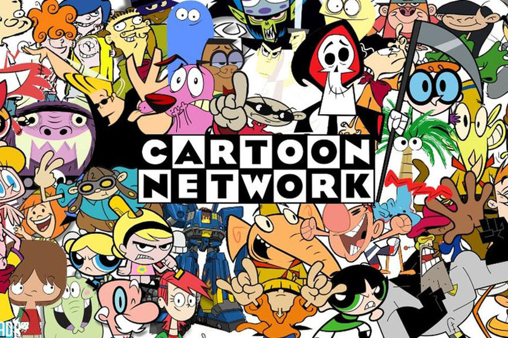
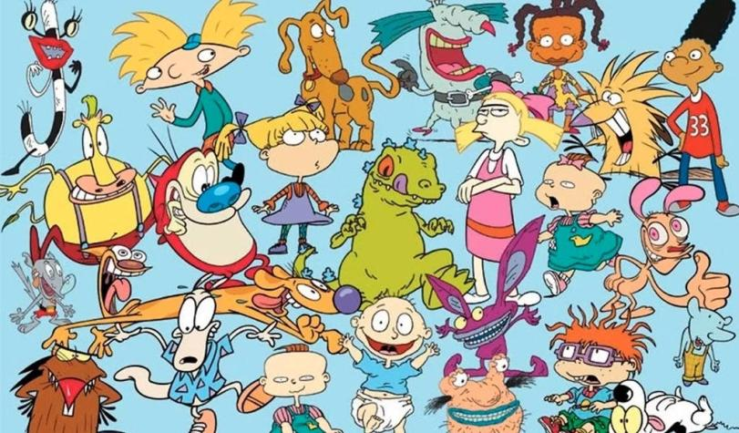
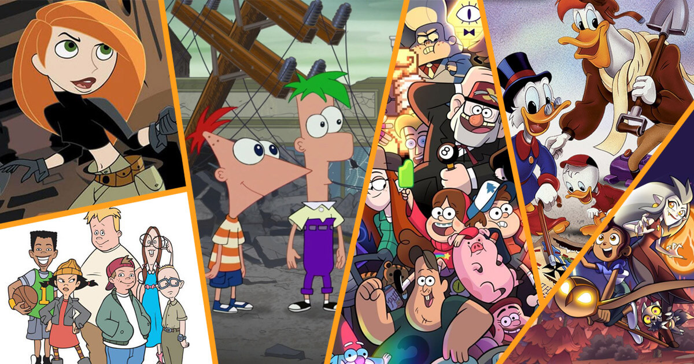

Objetivo
¡Bienvenido a un viaje nostálgico a la era dorada de los dibujos animados y series antiguas! Sumérgete en recuerdos entrañables mientras exploras nuestra colección de los clásicos que marcaron una generación. Revive la magia de tu infancia y descubre o redescubre tus series favoritas en este rincón dedicado a la nostalgia animada de una época inolvidable.
En aquellos años, estos animados y series no solo eran simples programas de tv; eran nuestros compañeros de desayuno antes de ir al colegio o durante la merienda. ¿Recuerdas esos momentos mágicos compartidos con hermanos o amigos, riendo juntos con las historias de nuestros personajes favoritos?
Estos dibujos no solo nos entretenían, sino que estimulaban nuestra imaginación y creatividad. ¿Alguna vez has pensado nuevas aventuras inspiradas en esos universos animados? Además, muchas veces la tematica de nuestras fiestas de cumpleaños giraban en torno a estos personajes viendolos en manteles, vasos, platos, servilletas, piñata y hasta la misma torta, ¡nuestros dibujos animados favoritos eran el centro de atención en esos días tan especiales!
Este espacio está dedicado a revivir esos momentos inolvidables, a desempolvar esos recuerdos que nos transportan a una época llena de magia y alegría.